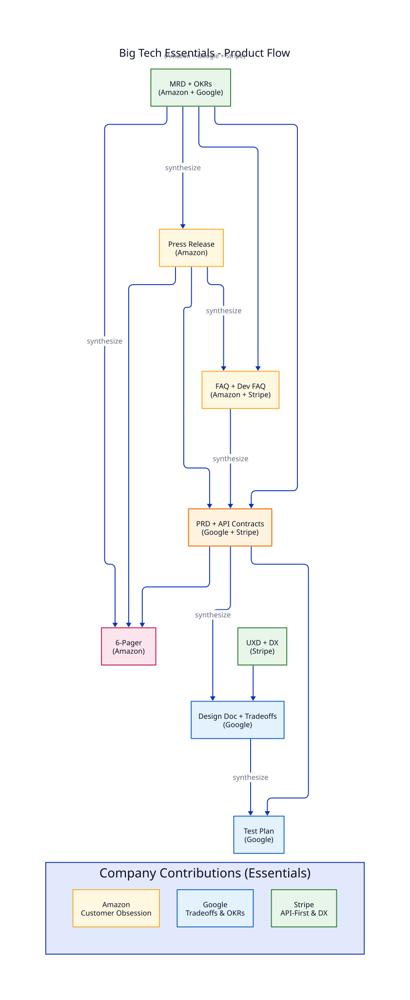
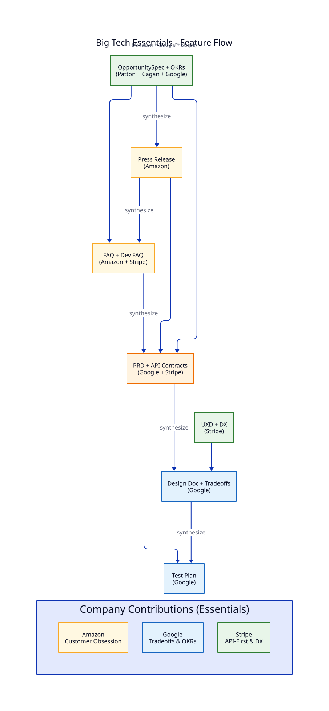
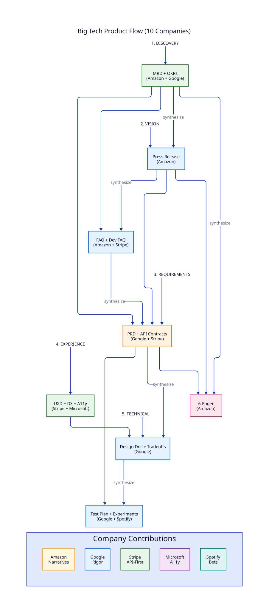
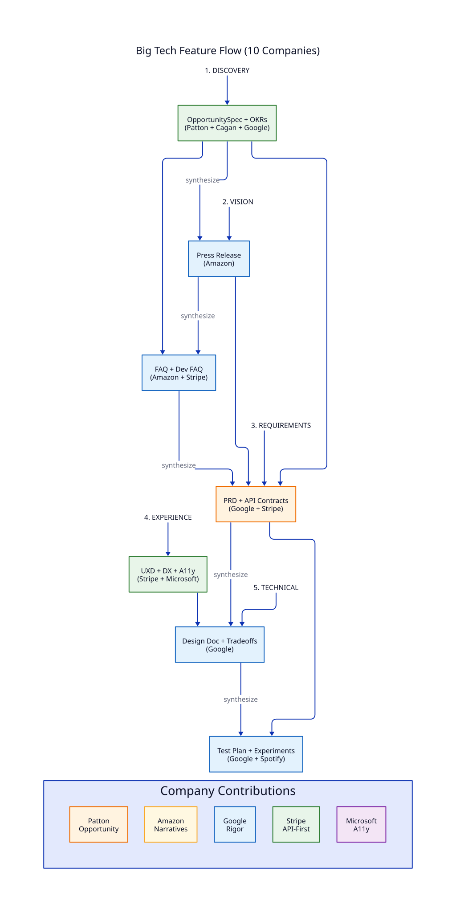

Big Tech Best Practices
The Big Tech profiles combine proven product development practices from 10 leading methodologies into a comprehensive "best of all worlds" framework. They merge the best of Amazon, Google, Stripe, Netflix, Spotify, Meta, Apple, Microsoft, Basecamp (Shape Up), and Teresa Torres (Continuous Discovery).
Profile Variants
| Profile |
Starting Document |
Best For |
big-tech-product |
MRD + OKRs |
New product lines, major initiatives |
big-tech-feature |
OpportunitySpec + OKRs |
Features on existing products |
Both variants share the same methodology, principles, and practices. They differ only in the starting document.
When to Use
Use the Big Tech profiles when you want:
- A comprehensive, battle-tested methodology
- The rigor of multiple complementary approaches
- High standards without dogmatic adherence to one company's way
- Flexibility to emphasize different practices based on context
Big Tech Essentials
For teams that want the rigor of big-tech methodologies without the full 10-company synthesis, Big Tech Essentials provides a streamlined alternative focusing on three foundational methodologies:
- Amazon: Customer obsession, PR/FAQ, 6-pager narratives
- Google: OKRs, design docs, explicit tradeoffs
- Stripe: API-first design, developer experience
Essentials Profile Variants
| Profile |
Starting Document |
Pass Threshold |
big-tech-essentials-product |
MRD + OKRs |
70% |
big-tech-essentials-feature |
OpportunitySpec + OKRs |
70% |
Essentials Product Flow

Essentials Feature Flow

When to Use Essentials vs Full Big Tech
| Scenario |
Use Essentials |
Use Full Big Tech |
| Team new to structured specs |
Yes |
No |
| Startup / small team |
Yes |
No |
| Enterprise with established practices |
Consider |
Yes |
| Need comprehensive evaluation |
No |
Yes |
| Training teams on fundamentals |
Yes |
No |
| Want Netflix/Spotify/Meta practices |
No |
Yes |
| Focus on customer + API + technical |
Yes |
Consider |
Using the Essentials Profiles
# Initialize with essentials product profile
multispec init my-product --profile big-tech-essentials-product
# Initialize with essentials feature profile
multispec init my-feature --profile big-tech-essentials-feature
The essentials profiles include the same specs as the full profiles but with simplified rubrics that focus on the three core methodologies.
Company Contributions
Amazon - Customer Obsession & Narratives
| Practice |
Description |
| Working Backwards |
Write the press release first, then build |
| Customer Obsession |
Start with the customer and work backwards |
| PR/FAQ |
Press release + FAQ to challenge assumptions |
| 6-Pager |
Narrative documents over slides |
| Ownership |
Think long-term, end-to-end responsibility |
| Bias for Action |
Two-way door decisions should be fast |
| Disagree and Commit |
Truth-seeking, then alignment |
Google - Engineering Rigor & Data
| Practice |
Description |
| Design Docs |
Technical specifications with explicit tradeoffs |
| RFCs |
Peer review ensures diverse perspectives |
| OKRs |
Objectives and measurable key results |
| 10x Thinking |
Aim for 10x improvement, not 10% |
| Alternatives Considered |
Always evaluate multiple approaches |
| Explicit Tradeoffs |
Every decision has costs; make them visible |
| Non-Goals |
What we won't do is as important as what we will |
| Launch and Iterate |
Ship, measure, learn, improve |
Stripe - Developer Experience & APIs
| Practice |
Description |
| API-First |
Design the interface before the implementation |
| Developer Experience |
Optimize for developer productivity |
| Documentation Quality |
Docs are part of the product |
| Incremental Delivery |
Ship small, ship often, ship safely |
| Error Messages Matter |
Helpful errors are a feature |
| Consistency |
APIs should be predictable |
Netflix - Autonomy & Alignment
| Practice |
Description |
| Freedom & Responsibility |
Give talented people freedom, expect accountability |
| Context Not Control |
Provide context for decisions, not commands |
| Highly Aligned, Loosely Coupled |
Align on strategy, decouple execution |
| Radical Transparency |
Share information broadly, default to open |
Spotify - Agile at Scale
| Practice |
Description |
| Bets Not Projects |
Frame work as bets with explicit risk |
| Autonomous Squads |
Small teams with end-to-end ownership |
| Fail Fast, Learn Fast |
Quick experiments over long planning |
| Practice |
Description |
| Move Fast |
Speed is a competitive advantage |
| Bold Bets |
Take big swings on transformative ideas |
| Hackathon Culture |
Rapid prototyping to validate ideas |
Apple - Focus & Responsibility
| Practice |
Description |
| DRI |
Directly Responsible Individual for every decision |
| Say No |
Focus means saying no to good ideas |
| Deep Integration |
Own the full stack when it matters |
Microsoft - Growth & Inclusion
| Practice |
Description |
| Growth Mindset |
Learn from failure, embrace challenges |
| Accessibility First |
Design for everyone from the start |
Basecamp - Shape Up
| Practice |
Description |
| Fixed Time, Variable Scope |
Appetite sets time; scope flexes to fit |
| Shaping |
Define problems at the right abstraction level |
| Betting Not Planning |
No backlogs; bet on shaped pitches |
| Circuit Breaker |
Stop if it's not working; don't drag out failures |
| Appetite Not Estimates |
How much time is this worth, not how long |
| Hill Charts |
Track uncertainty (uphill) and execution (downhill) |
| Rabbit Holes |
Identify and avoid scope traps before starting |
| Cool-Down |
Two-week break between cycles for recovery |
Teresa Torres - Continuous Discovery
| Practice |
Description |
| Weekly Touchpoints |
Talk to customers every week, not just during research |
| Story-Based Interviews |
Collect stories of past behavior, not opinions |
| Opportunity Solution Trees |
Visualize path from outcome to solutions |
| Assumption Testing |
Test riskiest assumptions before building |
| Compare and Contrast |
Test multiple solutions in parallel |
| Product Trio |
PM, Design, Engineering collaborate on discovery |
| Outcome-Driven |
Start with measurable outcome, not feature requests |
| Small Experiments |
Run small, fast experiments to reduce risk |
When to Use Which Practice
The Big Tech profile includes practices for different situations. Choose based on context:
Use Shape Up Practices When
- Fixed timeline is more important than fixed scope
- Estimating is wasteful; appetite makes more sense
- Teams need autonomy to figure things out
- Project needs clear circuit breaker for failure
- Work requires exploration with bounded time
Use Continuous Discovery Practices When
- Problem space is uncertain and needs exploration
- Building features without recent customer input
- Multiple solutions could work; need to validate
- Assumptions are risky; need to test before building
- Research needs to be integrated with delivery (not separate phase)
Use Working Backwards When
- New product or major initiative
- Need to align stakeholders on vision
- Customer benefit needs to be crystal clear
- FAQ will expose hidden concerns
Use Design Docs/RFC When
- Architectural decisions have significant tradeoffs
- Multiple alternatives need to be evaluated
- Reversibility is uncertain (one-way door)
- Peer review will add valuable perspectives
The Big Tech Flows
Big Tech Product Flow (MRD Start)

Big Tech Feature Flow (OpportunitySpec Start)

Using the Big Tech Profiles
Initialize a Product Project
multispec init my-product --profile big-tech-product
Initialize a Feature Project
multispec init my-feature --profile big-tech-feature
Create MRD with OKRs (big-tech-product)
multispec draft mrd -p my-product
The MRD template includes:
- Customer segment and pain points (Amazon)
- Objectives and Key Results (Google)
- Market opportunity (standard)
Create OpportunitySpec with OKRs (big-tech-feature)
multispec draft opportunity-spec -p my-feature
The OpportunitySpec template includes:
- 12-box canvas (Patton + Cagan)
- OKR alignment (Google)
- Risk and assumptions validation
Working Backwards Phase
multispec synthesize press -p my-product
multispec synthesize faq -p my-product
The FAQ includes:
- Customer FAQ (Amazon)
- Stakeholder FAQ (Amazon)
- Developer/API FAQ (Stripe)
Create PRD with API Contracts
multispec synthesize prd -p my-product
The PRD template includes:
- User stories and requirements
- API contracts (Stripe)
- Non-goals (Google)
- Alternatives considered (Google)
- Success metrics (Google OKRs)
Create UXD with DX
multispec draft uxd -p my-product
The UXD template includes:
- User journeys
- Developer experience (Stripe)
- Accessibility considerations (Microsoft)
Synthesize Design Doc
multispec synthesize trd -p my-product
The TRD/Design Doc includes:
- Context and scope
- Goals and non-goals
- Alternatives analysis
- Explicit tradeoffs
- Reversibility assessment (two-way vs one-way door)
- Scalability considerations (10x)
Unified Principles
The Big Tech profile distills 30+ practices into these core principles:
Customer & User Focus
- Customer Obsession - Start with the customer (Amazon)
- Developer Experience - Optimize for developers (Stripe)
- Accessibility First - Design for everyone (Microsoft)
Vision & Ambition
- 10x Thinking - Aim for transformative improvement (Google)
- Working Backwards - Start with the end state (Amazon)
- Bets Not Projects - Frame with explicit risk (Spotify)
Decision Making
- Explicit Tradeoffs - Make costs visible (Google)
- Alternatives Considered - Evaluate options (Google)
- Data-Driven - Back decisions with data (Google)
- Bias for Action - Move fast on reversible decisions (Amazon)
- DRI - Clear ownership (Apple)
Quality & Standards
- Highest Standards - Never settle (Amazon)
- API-First - Design interface first (Stripe)
- Documentation Quality - Docs are product (Stripe)
- Non-Goals - Be explicit about scope (Google)
- Say No - Focus through exclusion (Apple)
Collaboration & Review
- Peer Review - Diverse perspectives (Google)
- Disagree and Commit - Debate, then align (Amazon)
- Context Not Control - Empower, don't command (Netflix)
- Radical Transparency - Default to open (Netflix)
Execution & Delivery
- Ownership - End-to-end responsibility (Amazon)
- Incremental Delivery - Ship small and often (Stripe)
- Launch and Iterate - Ship, measure, improve (Google)
- Move Fast - Speed is advantage (Meta)
- Fail Fast, Learn Fast - Quick experiments (Spotify)
Team & Culture
- Freedom & Responsibility - Trust with accountability (Netflix)
- Highly Aligned, Loosely Coupled - Strategy + autonomy (Netflix)
- Autonomous Squads - Small empowered teams (Spotify)
- Growth Mindset - Learn from failure (Microsoft)
- Frugality - Constraints breed resourcefulness (Amazon)
Scoping & Planning (Shape Up)
- Fixed Time, Variable Scope - Appetite sets time; scope flexes (Basecamp)
- Appetite Not Estimates - How much is it worth, not how long (Basecamp)
- Shaping - Define at right abstraction level (Basecamp)
- Betting Not Planning - No backlogs; bet on pitches (Basecamp)
- Circuit Breaker - Stop failures early, don't drag out (Basecamp)
- Rabbit Holes - Identify scope traps upfront (Basecamp)
Discovery & Validation (Continuous Discovery)
- Weekly Touchpoints - Talk to customers every week (Torres)
- Story-Based Interviews - Collect stories, not opinions (Torres)
- Opportunity Solution Trees - Visualize outcome to solution path (Torres)
- Assumption Testing - Test riskiest assumptions first (Torres)
- Compare and Contrast - Test multiple solutions in parallel (Torres)
- Product Trio - PM, Design, Engineering collaborate (Torres)
Rubric Extensions
The Big Tech profile adds evaluation criteria from each methodology:
MRD Evaluation
| Category |
Weight |
Source |
| OKR Quality |
15% |
Google |
| Customer Clarity |
15% |
Amazon |
| Standard MRD |
70% |
Base |
PRD Evaluation
| Category |
Weight |
Source |
| API Contract |
10% |
Stripe |
| Non-Goals |
10% |
Google |
| Alternatives |
10% |
Google |
| Standard PRD |
70% |
Base |
TRD Evaluation
| Category |
Weight |
Source |
| Explicit Tradeoffs |
15% |
Google |
| Reversibility |
10% |
Google/Amazon |
| Scalability (10x) |
10% |
Google |
| Standard TRD |
65% |
Base |
UXD Evaluation
| Category |
Weight |
Source |
| Developer Experience |
10% |
Stripe |
| Accessibility |
10% |
Microsoft |
| Standard UXD |
80% |
Base |
Shape Up Pitch Evaluation
| Category |
Weight |
Source |
| Problem Clarity |
20% |
Basecamp |
| Appetite Reasoning |
20% |
Basecamp |
| Solution Abstraction |
25% |
Basecamp |
| Rabbit Holes |
20% |
Basecamp |
| No-Gos |
15% |
Basecamp |
OST Evaluation
| Category |
Weight |
Source |
| Outcome Measurable |
25% |
Torres |
| Opportunities Researched |
25% |
Torres |
| Solutions Multiple |
25% |
Torres |
| Experiments Defined |
25% |
Torres |
Discovery Snapshot Evaluation
| Category |
Weight |
Source |
| Weekly Cadence |
30% |
Torres |
| Story Quality |
35% |
Torres |
| Learnings Actionable |
35% |
Torres |
Assumption Map Evaluation
| Category |
Weight |
Source |
| Type Coverage (DVFUE) |
30% |
Torres |
| Prioritization |
35% |
Torres |
| Tests Designed |
35% |
Torres |
Example Workflows
Big Tech Product Workflow
# 1. Initialize with big-tech-product profile
multispec init checkout-v2 --profile big-tech-product
# 2. Draft MRD with OKRs
multispec draft mrd -p checkout-v2
# Edit to add customer pain points and OKRs
multispec eval mrd -p checkout-v2
multispec approve mrd -p checkout-v2
# 3. Working Backwards (Amazon)
multispec synthesize press -p checkout-v2
multispec eval press -p checkout-v2
multispec approve press -p checkout-v2
multispec synthesize faq -p checkout-v2
# Add developer FAQ section (Stripe)
multispec eval faq -p checkout-v2
multispec approve faq -p checkout-v2
# 4. 6-Pager narrative (Amazon)
multispec synthesize narrative-6p -p checkout-v2
multispec eval narrative-6p -p checkout-v2
multispec approve narrative-6p -p checkout-v2
# 5. PRD with API contracts (Stripe + Google)
multispec synthesize prd -p checkout-v2
# Add API contract, non-goals, alternatives
multispec eval prd -p checkout-v2
multispec approve prd -p checkout-v2
# 6. UXD with DX (Stripe + Microsoft)
multispec draft uxd -p checkout-v2
# Include developer experience and accessibility
multispec eval uxd -p checkout-v2
multispec approve uxd -p checkout-v2
# 7. Design Doc (Google)
multispec synthesize trd -p checkout-v2
# Ensure tradeoffs, alternatives, scalability
multispec eval trd -p checkout-v2
multispec approve trd -p checkout-v2
# 8. Test Plan with Experiments
multispec synthesize tpd -p checkout-v2
multispec eval tpd -p checkout-v2
multispec approve tpd -p checkout-v2
# 9. Final reconciliation
multispec reconcile -p checkout-v2
# 10. Check status
multispec status -p checkout-v2
Big Tech Feature Workflow
# 1. Initialize with big-tech-feature profile
multispec init payment-retry --profile big-tech-feature
# 2. Draft OpportunitySpec with OKRs
multispec draft opportunity-spec -p payment-retry
# Fill in 12-box canvas with OKR alignment
multispec eval opportunity-spec -p payment-retry
multispec approve opportunity-spec -p payment-retry
# 3. Working Backwards (Amazon)
multispec synthesize press -p payment-retry
multispec eval press -p payment-retry
multispec approve press -p payment-retry
multispec synthesize faq -p payment-retry
multispec eval faq -p payment-retry
multispec approve faq -p payment-retry
# 4. PRD with API contracts (Stripe + Google)
multispec synthesize prd -p payment-retry
multispec eval prd -p payment-retry
multispec approve prd -p payment-retry
# 5. UXD with DX (Stripe + Microsoft)
multispec draft uxd -p payment-retry
multispec eval uxd -p payment-retry
multispec approve uxd -p payment-retry
# 6. Design Doc (Google)
multispec synthesize trd -p payment-retry
multispec eval trd -p payment-retry
multispec approve trd -p payment-retry
# 7. Test Plan with Experiments
multispec synthesize tpd -p payment-retry
multispec eval tpd -p payment-retry
multispec approve tpd -p payment-retry
# 8. Final reconciliation
multispec reconcile -p payment-retry
# 9. Check status
multispec status -p payment-retry
When to Use Other Profiles
| Scenario |
Consider Instead |
| Pure API/platform product |
Stripe profile (more focused) |
| Greenfield consumer app |
AWS profile (narrative focus) |
| Engineering-heavy infrastructure |
Google profile (design doc focus) |
| Early-stage validation |
Lean Startup profile (hypothesis focus) |
| Feature on existing product |
AWS Feature profile (OpportunitySpec) |
| Fixed-time projects only |
Shape Up profile (dedicated) |
| Research-heavy, continuous |
Continuous Discovery profile (dedicated) |
Optional Shape Up and Continuous Discovery Artifacts
The Big Tech profile includes optional artifacts from Shape Up and Continuous Discovery that can be used when appropriate:
Shape Up Artifacts
| Artifact |
When to Use |
shapeup-pitch |
Major features with fixed time budget |
shapeup-scope |
Track progress during fixed-time execution |
# Optional: Create a shaped pitch for a major feature
multispec draft shapeup-pitch -p my-feature
# Optional: Track scopes during execution
multispec draft shapeup-scope -p my-feature
Continuous Discovery Artifacts
| Artifact |
When to Use |
ost |
Map opportunities to solutions with experiments |
discovery-snapshot |
Track weekly discovery activities |
assumption-map |
Prioritize assumptions for testing |
# Optional: Create Opportunity Solution Tree
multispec draft ost -p my-feature
# Optional: Track weekly discovery
multispec draft discovery-snapshot -p my-feature
# Optional: Map and prioritize assumptions
multispec draft assumption-map -p my-feature
References
Amazon
Google
Stripe
Netflix
Spotify
Apple
Microsoft
Basecamp (Shape Up)
Teresa Torres (Continuous Discovery)